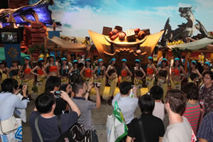
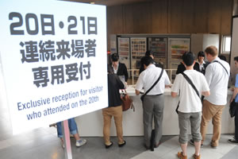
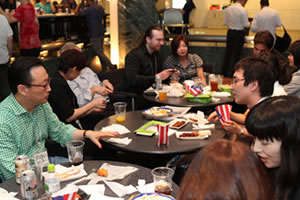
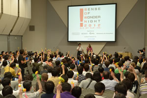
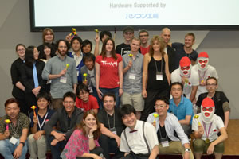

The first visit to TGS -Business Day Version-


- The picture shown here are from TGS2012. Please look at them for your reference.
Points for your attention when you leave the venue / re-enter the venue
About re-entry
Even if you leave the venue, you can enter again as many times as you want during the opening hours if you have a Business Day Visitor's Badge. When you enter again, have the staff check your visitor's badge at the re-entry entrance.
About Exit Time
Visitors MUST leave the venue by 5 p.m. Usually from around 4:50 p.m., the companions at some of the exhibitor's booth all line up to see the visitors off. Even under such situation, be sure to leave the site by 5 p.m.

If you want to visit TGS2013 on both Business Days
If you bring the Business Day Visitor's Badge that you used on the 1st day to the dedicated counter (2nd floor concourse in front of Hall 1), we will exchange the 1st day badge for the 2nd day badge. Same as the 1st day, we will check your ID. Therefore, please show us your ID with a photo. For your information, your visitor's badge cannot be given to or used by any other person except yourself.

Party and event after closing time
After the closing time on the 2nd day (20th), International Party will be held at the International Conference Hall from 5 p.m. Anyone who has a business day visitor badge can attend this Party. Because exhibitors from Japan and abroad will also come to this party, it will provide a warm exchange opportunity for everyone in the game industry.

On the same 2nd day (20th), an event to discover new game ideas called "Sense of Wonder Night 2013" will be held from 5:30 p.m.
From among many works that have been applied from Japan and abroad, 10 titles with the feeling of "Sense of Wonder" will be chosen. These 10 titles will be given a chance to do a presentation at the venue. After the presentation, various awards will be announced. Anyone who has a Business Day Visitor's Badge can come and join us for free.

